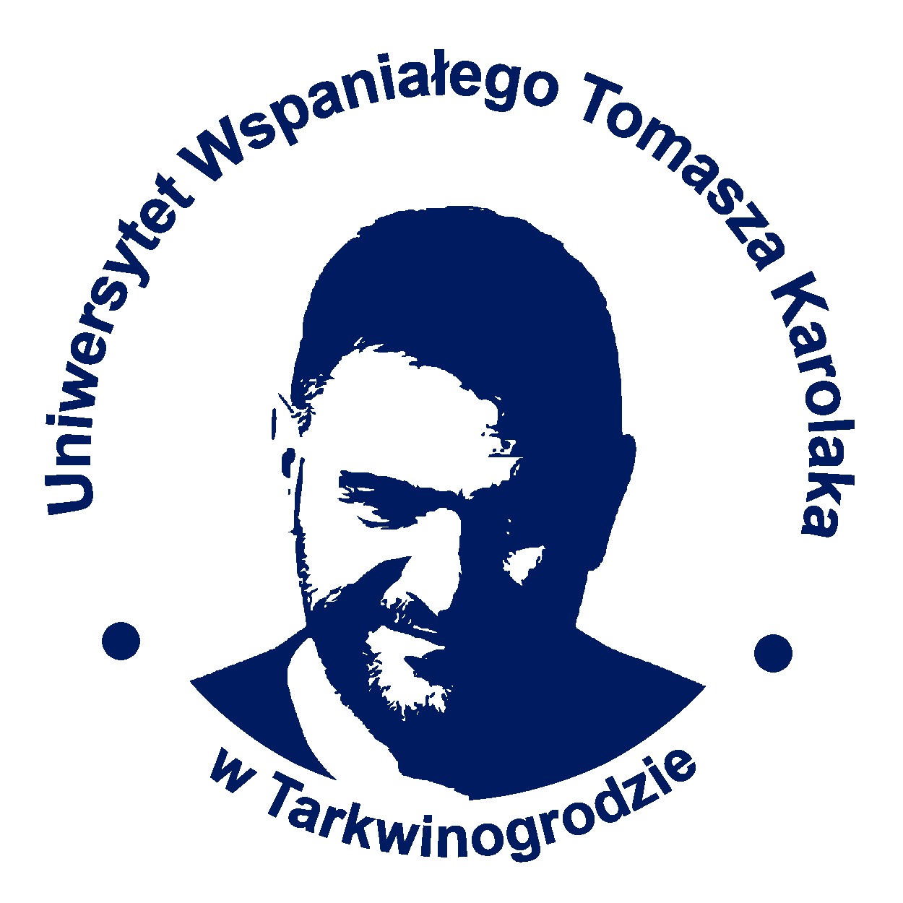
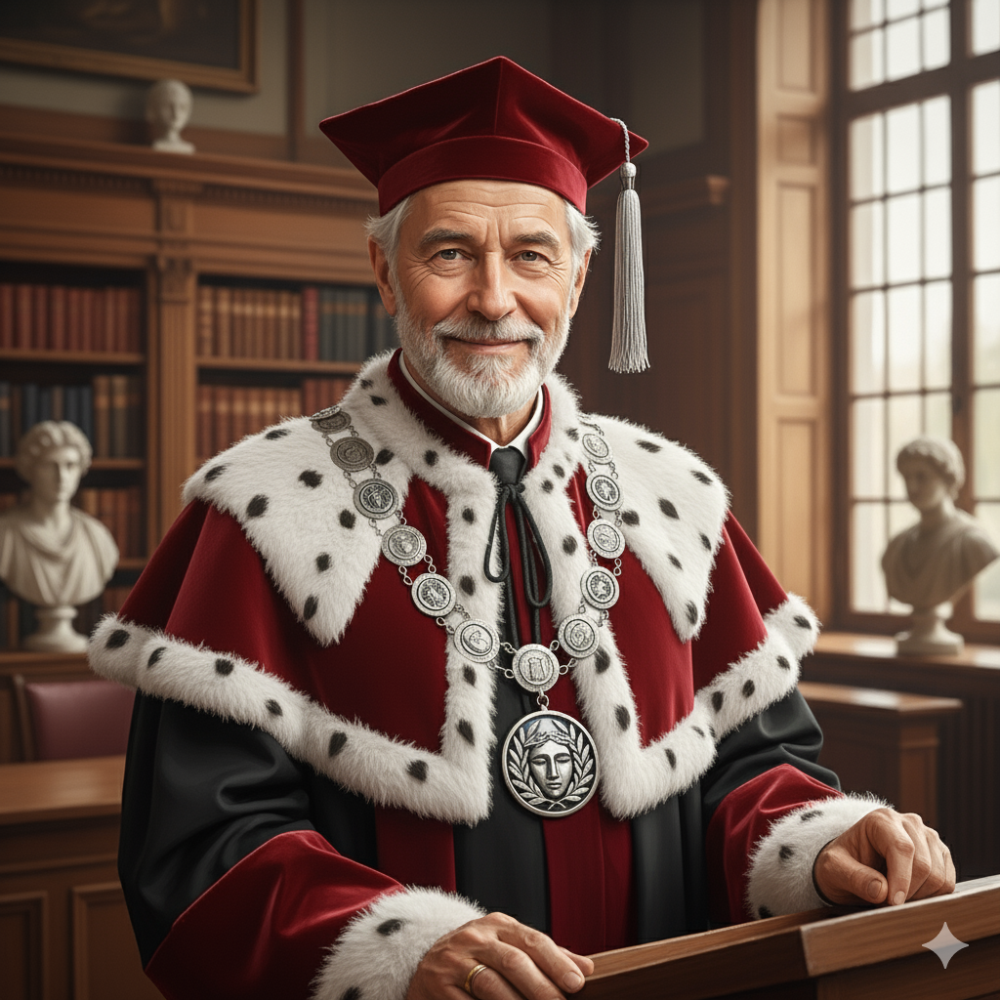

UWTK - Naukowa Pasja, Nasza Misja
Witamy na stronie głównej Uniwersytetu Wspaniałego Tomasza Karolaka w Tarkwinogrodzie – wiodącej w Feloroście narodowej placówki naukowej i edukacyjnej Krulestwa Mutlikont, która łączy tradycyjną akademicką rzetelność z przełomowym podejściem do zarządzania sukcesem. Nasza misja to kształcenie elit gotowych do podejmowania najtrudniejszych wyzwań – zarówno w dziedzinach ścisłych, humanistycznych i społecznych, jak i w życiu codziennym.
Władze Uniwersytetu Wspaniałego Tomasza Karolaka to zespół wizjonerów, którzy niestrudzenie pracują nad podtrzymaniem najwyższych standardów edukacyjnych oraz zapewnieniem absolwentom „Czynnika Karolakowego” – gwarancji sukcesu.

| Stanowisko | Imię i Nazwisko | Zakres Obowiązków |
|---|---|---|
| Prorektor ds. Nauki i Rozwoju | Prof. dr rehab. Borys Grotowski | Nadzór nad strategicznznymi kierunkami badań naukowych Uczelni, koordynacja innowacji międzywydziałowych oraz zarządzanie pozyskiwaniem krajowych i międzynarodowych grantów rozwojowych. |
| Prorektor ds. Studenckich | Dr Maria Entuzjastyczna | Monitorowanie jakości życia studenckiego, dbałość o kulturę akademicką, wspieranie organizacji studenckich, stypendia oraz nadzór nad procesami rekrutacyjnymi i adaptacyjnymi. |
| Prorektor ds. Pracowniczych | Mgr inż. Anna Kadrówka | Zarządzanie polityką kadrową i rozwojem zasobów ludzkich Uczelni, prowadzenie szkoleń dla kadry dydaktycznej i administracyjnej oraz negocjacje zbiorowe i regulacje dotyczące zatrudnienia. |
| Prorektor ds. Administracji | Inż. Paweł Logistyczny | Odpowiedzialność za efektywność zarządzania infrastrukturą i majątkiem Uczelni, nadzór nad planowaniem finansowym, inwestycjami oraz bezpieczeństwem technicznym wszystkich obiektów. |
UWTK łączy tradycyjną akademię z nowatorskimi dziedzinami, oferując kompleksowe wykształcenie w 13 głównych obszarach wiedzy.
Kierunki: Teologia Lewosławna, Religijne Prawo Lewosławne
Kierunki: Matematyka Czysta; Analityka Danych Stosowanych; Statystyka i Modelowanie Procesów.
Kierunki: Astrologia Kulturalna; Kosmologia Teoretyczna; Numerologia Stosowana w Analityce.
Kierunki: Bioinżynieria Genetyczna; Biologia Środowiskowa; Mutageneza Eksperymentalna.
Kierunki: Chemia Fizyczna i Materiałowa; Chemia Organiczna i Nanotechnologia; Inżynieria Chemiczna.
Kierunki: Medycyna Estetyczna i Zdrowie Publiczne; Terapia Kryzysowa; Stresologia Kliniczna.
Kierunki: Prawo; Administracja Publiczna i Samorządowa.
Kierunki: Filozofia Egzystencjalna i Ontologia; Etyka Społeczna i Antropologia Systemowa.
Kierunki: Bezpieczeństwo; Bezpieczeństwo Cyfrowe i Informatyczne; Zarządzanie Kryzysami i Ochrona Danych.
Kierunki: Ekonomia Stosowana; Finanse Projektów Inwestycyjnych i Dotacje; Rachunkowość.
Kierunki: Prawo Multikont; Kontologia
Kierunki: Historia; Archeologia i Dokumentacja Procesów Historycznych.
Kierunki: Polonistyka (spec. Nowomowa); Kulturoznawstwo i Teoria Komunikacji.